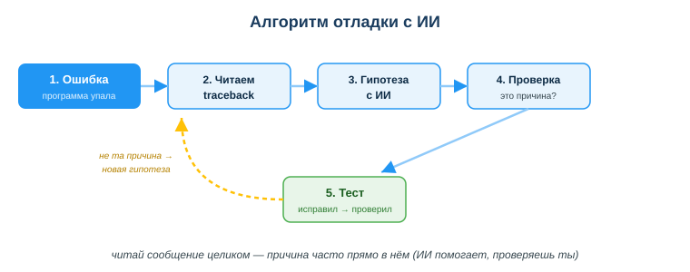
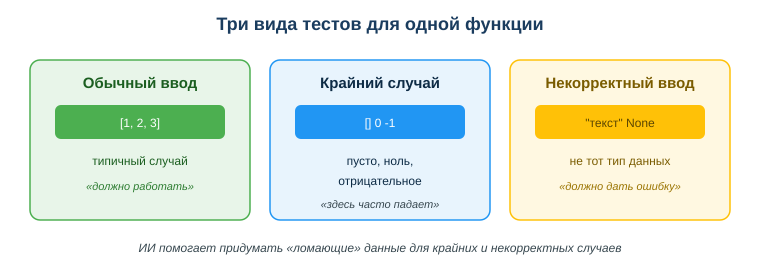

Ты дописал функцию, запускаешь — и программа падает с красным сообщением на пол-экрана. Раньше в таком случае начинают менять строки наугад: «а вдруг заработает». Время уходит, причина непонятна, а баг возвращается в другом месте.
Сегодня рядом есть ИИ-ассистент. Он умеет прочитать сообщение об ошибке, объяснить его простыми словами и подсказать вероятную причину, а ещё — придумать тесты, на которых код сломается. Но решение принимаешь и проверяешь ты. Этот урок — про то, как отлаживать и тестировать код вместе с ИИ, не теряя контроль.

Код почти никогда не работает с первого раза. Большую часть рабочего времени разработчик не пишет новый код, а ищет и исправляет ошибки в уже написанном. Кто умеет быстро находить причину бага и закрывать его тестом — экономит часы и не выпускает в продакшн поломанную программу.
Связь с профессией: отладка и тестирование — это ежедневная работа разработчика ПО. ИИ ускоряет разбор ошибок и генерацию тестов, но ответственность за качество кода остаётся на человеке. Умение работать с ИИ как с помощником, а не как с «оракулом», которому слепо верят, — ключевой профессиональный навык.
Посмотри на схему «Алгоритм отладки с ИИ» выше. Ответь на вопросы:
Проще: traceback — не «страшный красный текст», а карта, которая показывает, где и что сломалось. Читать её нужно целиком, особенно последние строки.
Когда программа падает, она выдаёт traceback: тип ошибки, строку и описание. Разумный алгоритм:
ZeroDivisionError: division by zero — где-то делишь на ноль);Тест — это код, который проверяет, что твой код работает правильно. Вместо того чтобы каждый раз запускать программу руками, ты пишешь тесты, и они проверяют код автоматически. ИИ помогает:
Хороший набор тестов проверяет три вида случаев: обычный (типичные данные), крайний (ноль, пусто, отрицательное) и некорректный ввод (не тот тип данных).

Функция суммы списка работает на примере [1, 2, 3], но падает на пустом списке. ИИ предложил тест с [] — баг обнаружен. Следующий шаг: добавить обработку пустого ввода и тест на него, чтобы баг больше не вернулся.
try/except и «глотать» ошибки), а не устранять его причину.Ответь письменно:
ZeroDivisionError: division by zero в строке деления. Назови причину и где её искать. Сформулируй запрос к ИИ: что вставить и что НЕ вставлять.[2, 4, 6]; список из одного элемента [5]; пустой список [] (крайний — деление на ноль); нечисловой ввод ["a", "b"] (некорректный — должна быть ошибка)».
Источник: официальная документация Python (раздел «Errors and Exceptions»), материалы Real Python и pytest; рамка цифровых компетенций DigComp 2.2; UNESCO AI Competency Framework, 2024.
Разработал: преподаватель ИКТ, магистр управления и информационной безопасности Калиаскаров Д.А.
Материал разработан рабочей группой ТОО «Колледж Хекслет Казахстан» и одобрен к использованию в обучении решением Педагогического совета.